- Искусства полезны лишь в том случае,
- если они развивают ум, а не отвлекают его.
- Сенека
- если они развивают ум, а не отвлекают его.
Юрий Тореев — мастер плаката и каллиграфии, живописи и графики.
Проблематика его работ многообразна: человек и мир, время и вечность, свобода личности и этика, память истории и современность.
Попробуем вкратце сформулировать credo Художника по всем этим проблемам.
Взгляд его на мир — более чем трезвый. Он смотрит на жизнь критическим взглядом: его кисть и перо берут на себя неблагодарную задачу очищать бытие «шершавым языком плаката». Он как будто говорит словами поэта:
- Этот мир — не наважденье,
- а боренье и гаданье.
- (К. Михеев)
- а боренье и гаданье.
Человек справедливо представляется Юрию Торееву наибóльшей ценностью среди созданий природы. Самые впечатляющие плакаты посвящены проблеме сохранения жизни человека и целых наций, они говорят о преступности геноцида и необходимости хранить память о жертвах репрессий. Вместе с тем во весь голос звучит осуждение пороков общества и деградации современного человека, вызванной условиями жизни. Ведь известно: для веселия планета наша мало оборудована.
В работах Юрия Тореева наше время просматривается как увеличительное стекло, фильтрующее явления этого мира: негативные выступают на первый план, позитивные отступают (исключение составляет живопись, которая отображает время без деформаций, со всеми его положительными и отрицательными моментами).
Дань вечности Художник невольно отдаёт в своих плакатах и графических листах, соблюдая вечные законы и нормы композиции, согласованные от начала времен с законами зрительных восприятий и психологии человека.
Свобода — вещь бесценная. О сладкое имя свободы! — восклицали древние римляне. Новые времена уточняют: «Только тот достоин свободы, кто сумеет её завоевать» (Ш. Бодлер) Юрий Тореев сумел, как никто. Его творчество не стеснено требованиями конъюнктуры, моды, заказа, стиля: все темы и их трактовку он выбирает по собственному желанию и усмотрению, а технику и стиль своих работ разнообразит в широких пределах — от классики до примитива. Такой же свободы желает Мастер для всего человечества: он гневно осуждает принуждение и унижение человека, подавление его достоинства. Зажим свободы слова — тема нескольких критических мини-плакатов Юрия Тореева. Если говорить о проблеме этики, то она решается просто: будь Человеком!
Отношение Юрия Тореева к истории близко к тому, что записано в книге Экклезиаста:
- Что было, то и будет вечно,
- и нет нового под солнцем.
В своих театральных плакатах Художник не прибегает к историческому антуражу, костюмам, лицам… Он трактует события драмы как современные, поскольку театральные страсти имеют место в любое время и в любой стране: гнев, ревность, любовь, раздвоение личности, жестокость, тирания…Современный театр давно уже экспериментирует с классикой в плане осовременивания. И режиссёр, и художник пользуются своим правом интерпретации классического сюжета.
Существенная особенность метода работы Юрия Тореева — лёгкость мышления и выполнения. Он называет это игрой. Особенно игривы мини-плакаты с объявлениями лекций искусствоведов Аллы Пигальской и Наташи Вольфганг. По всей видимости, это не просто знаки дружеского внимания к деятельности учёных дам, но также выражение скептического (мягко говоря), отношения к науке, которой они занимаются. Впрочем, судить об этом предоставляется зрителю и читателю.
НАЧАЛО
Голос Его, как шум вод многих. (Откр, 1:15)
Заглавным плакатом к альбому работ Юрия Тореева может быть «Голос». Художник нашего времени, достойный этого имени, берет на себя роль пророка. Его миссия — говорить, петь, обличать, напоминать, утверждать и отрицать — всеми средствами, какие есть в его распоряжении: кистью, пером, словом, звуками музыки…Если он, художник, перестанет говорить, то камни возопиют.
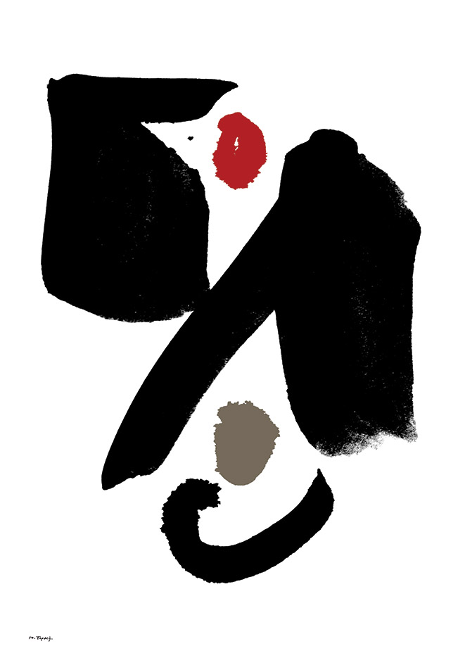
Увы, при изобилии слов в наше время происходит их инфляция — «Нет веры людям, веры нет словам» (К. Михеев) Мастер плаката подкрепляет своё высказывание изображением, а изображение проясняет словом.
Слово, написанное мастером каллиграфии, уже само по себе выражает некую мысль, сверх-смысл. Оно более выразительно, чем слово, написанное стандартным шрифтом. Надписи Юрия Тореева по-своему каллиграфичны. Они индивидуальны, выразительны и живописны. Они говорят собственным голосом.
КАЛЛИГРАФИЯ
- Каллиграфия — искусство чёткого и красивого письма.
- (Из толкового словаря русского языка)
Мастера и ценители классической каллиграфии высказали много проникновенных слов об этом благородном искусстве. Само слово «каллиграфия» означает «прекрасное письмо».
Шрифты на плакатах Юрия Тореева трудно назвать «прекрасным письмом». Это скорее «антикаллиграфия». В ней нет общепонятной нормативной красоты — но есть правда непосредственного чувства, искреннего высказывания. «Красивые слова не правдивы, красивая внешность обманчива» — гласит древняя мудрость Дао дэ цзин. Написанному от руки объявлению, корявым почерком, на обёрточной бумаге, — веришь больше, чем аккуратно напечатанной таблице. Каллиграфия Юрия Тореева — это своего рода авангардизм в искусстве письма — протест против засилья официальных патентованных шрифтов в рекламе, печати, компьютерах. Все в Поднебесной узнали, что стандартные шрифты прекрасны — поэтому закономерно должны были появиться некрасивые, шероховатые, неправильные. Эльзевиры драгоценны, как яшма — шрифты Тореева просты, как камень. Это вполне соответствует мудрости Дао. «Превращение в противоположность есть действие Дао».
Письмена Юрия Тореева, как великий образ, не имеют канонической формы. Они созданы свободной рукой, они свободны от канонов. И опять процитируем Лао Цзы. «Верные слова не изящны. Красивые слова не заслуживают доверия»).(Дао дэ цзин §81). Как же обойтись без каллиграфии? — В счастливом государстве, — говорит мудрец, — пусть народ снова начинает плести узелки и употреблять их вместо письма.
Похоже, что Юрий Тореев осуществил мечту великого китайского мудреца — многие его надписи как будто сплетены из толстой веревки. Это — «молчащее слово».
Рассмотрим группу этюдов Silentium (молчание).
Этим словом названы четыре каллиграфических этюда.
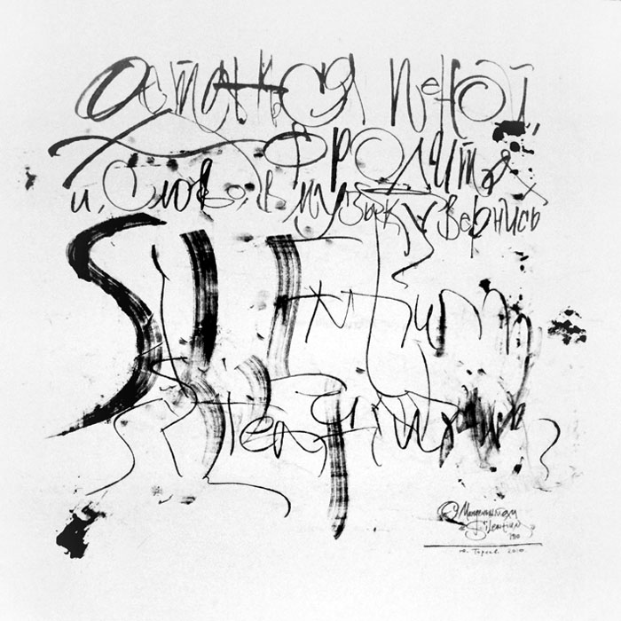
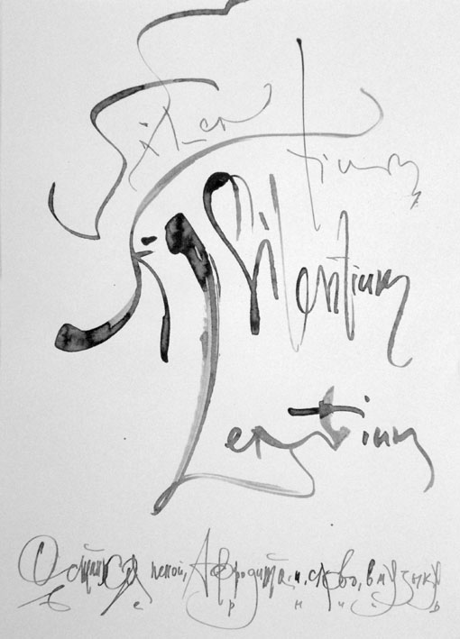
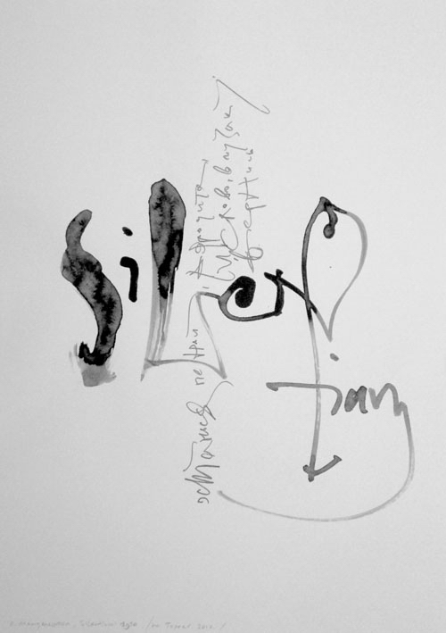
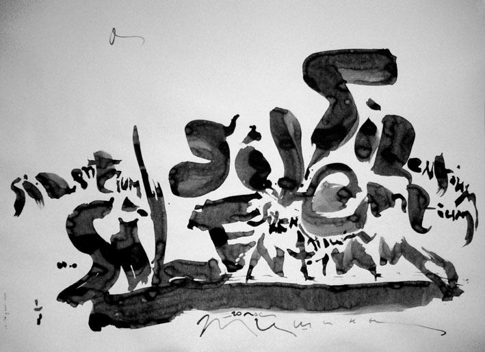
Ключом к пониманию их может служить подпись:
- Останься пеной, Афродита,
- И слово — музыкой вернись. (О. Мандельштам)
Как связана с этими словами каллиграфия Художника?
Двустишие Осипа Мандельштама так же сложно, как каллиграфия Юрия Тореева. Здесь возникают, казалось бы, разноплановые образы: пена, слово, музыка, и ещё Афродита — символ любви. И всё это объединяется понятием «молчание».
Чуть-чуть подумав, понимаем: молчание — это наше с вами состояние (антидействие), когда мы рассматриваем каллиграфию Юрия Тореева. Как будто написаны какие-то слова, — но они не говорят, не звучат, не доходят до нашего органа слуха. Они или невнятны, с трудом читаемы, или вовсе неразборчивы. Они молчат. О чём? Почему? Зачем?
— Может быть, это — мудрое безмолвие? (Разговор — серебро, а молчание — золото)…
— Или Художник опасается разглашать какую-то тайну и не желает быть понятым?
— Вполне возможно, что Художник ищет психологической разрядки, давая волю руке и отключая мышление; рука его свободно музицирует, создавая конгломерат мелких или крупных знаков, не обременённых смыслом. Но как бы ни казались некоторые из них хаотичны, — везде они построены (или разрушены) по определённому принципу (см. основы композиции в живописи).
Некоторые каллиграфические этюды напоминают эпизоды настройки инструментов в оркестровой яме перед началом оперного спектакля.
Не знаю, как Вы, читатель, а я слушаю такую музыку с удовольствием, природа которого непонятна мне самой.
И всё же лучше невнятный шум, чем полное молчание. Древние римляне ощущали молчание как скрытую угрозу, как потенциальную опасность, чреватую несчастьями. SIMUL IPSA SILENTIA TERRENT — само безмолвие наполняет страхом.
Молчание текстов Тореева скрывает ещё один роковой смысл: «Не всякому слову верь»; «Слово к делу не пришьёшь», — гласит народная мудрость.
Но есть у Юрия Тореева и такие шрифтовые плакаты, которые не просто говорят или поют, но бьют в набат. Взгляните на этот рисунок. Это не буквы А и Б. Это люди — два человеческих существа, которые никогда не поймут друг друга, не договорятся, не сработаются, т.к. каждое из них (этих существ) живет своей жизнью. Оно — «вещь в себе». Между ними непреодолимая преграда — расстояние, как и между людьми, каждый из которых одинок и заключён в непроницаемую оболочку собственного тела.
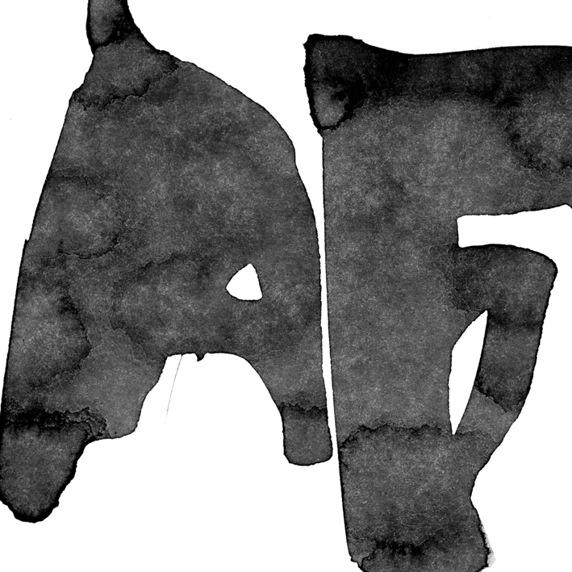
Что желаннее всего для человека? — Общение, близость с другими людьми. Такова природа человека — он не терпит изоляции от других людей.
Этот огромный плакат (120х120см) производит убийственное впечатление. Истина, заключённая в нем, бесспорна. Понимаешь, что душевная близость людей — всего лишь иллюзия, необходимая нам для жизни.
- «Лжет гражданин гражданину, и все друг над другом смеются
- Знаться не хочет никто с мненьем ни добрых, ни злых» (Феогнид)
Это печальный вывод, но, зная эту истину, легче пережить разочарования в людях.
Другой вариант этого мотива. Здесь контуры букв А и Б покрыты черно-серо-белой потёртой фактурой, что делает их ещё более похожими на человеческие фигуры, изваянные из шершавого камня.
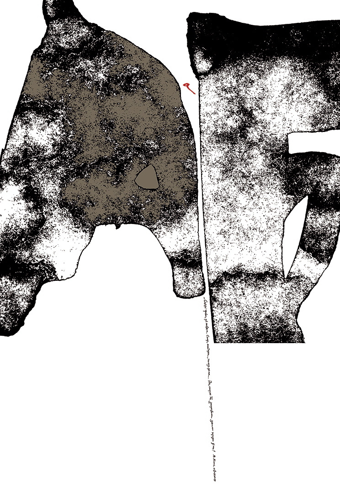
Каллиграфия Юрия Тореева — пространство свободной игры
- «Искусство, выражающее свободу — лучшее из искусств».
- (Максим Кантор)
Путешествуя свободно, легко заблудиться — гласит восточная мудрость.
В области искусства в наше время невозможно заблудиться: обязательно попадёшь в какой-нибудь из многочисленных стилей. Кисть Юрия Тореева не признаёт иных законов, кроме правил игры, — поэтому каждый каллиграфический этюд «попадает» в какой-либо из сложившихся стилей.
Возникает желание разобраться: в какие стили играет Художник?
Прежде всего — классика.
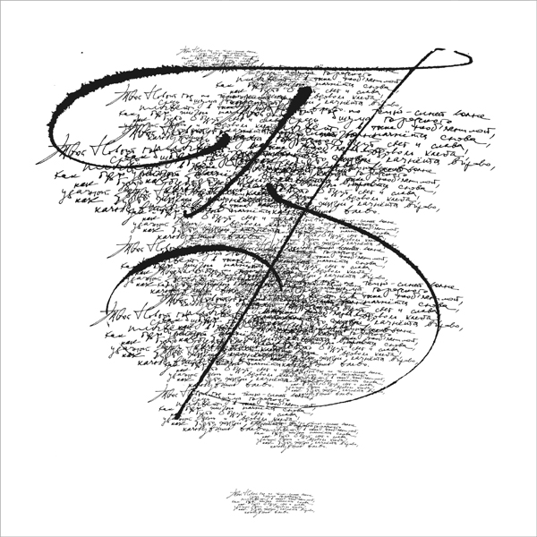
Белый лист исписан черными чернилами.
Это стихи о Новом годе и
- о том, как будут свет и слава,
- о том, как жизнь, качнувшись влево,
- качнётся вправо (или наоборот).
- о том, как жизнь, качнувшись влево,
На текст наслаивается ещё один текст (абсолютно неразличимый), а поверх всего этого — роскошный росчерк во весь лист. Убеждаемся, что Юрий Тореев отлично пишет изящным стилем, но не всегда этого желает.
Живописно-музыкальный каллиграфический этюд.
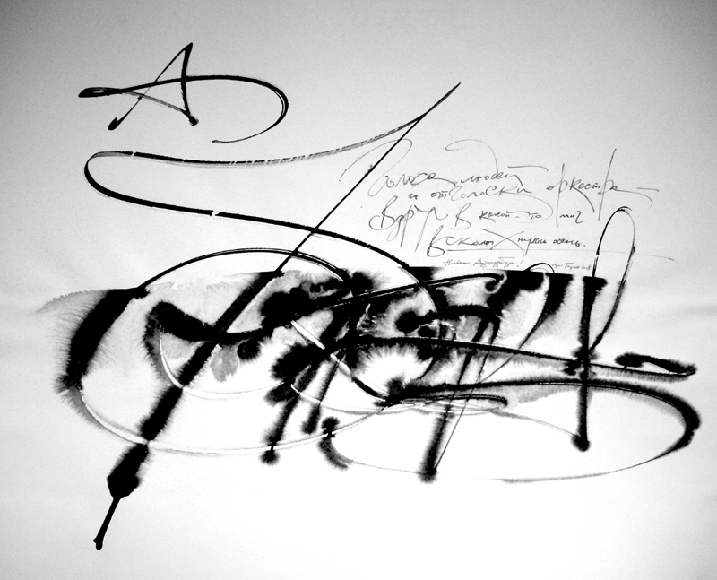
Лёгкий, свободный и светлый шрифт внезапно сменяется крупным, угольно-черным с размывами, построенным из классических элементов, но не содержащим какого-либо смысла, кроме игры плавных линий.
Похоже, что здесь рука Художника начертала алфавит, не отрывая пера от бумаги. Получился синтез готики и барокко. А в целом — каллиграфическая игра в виртуозерию.
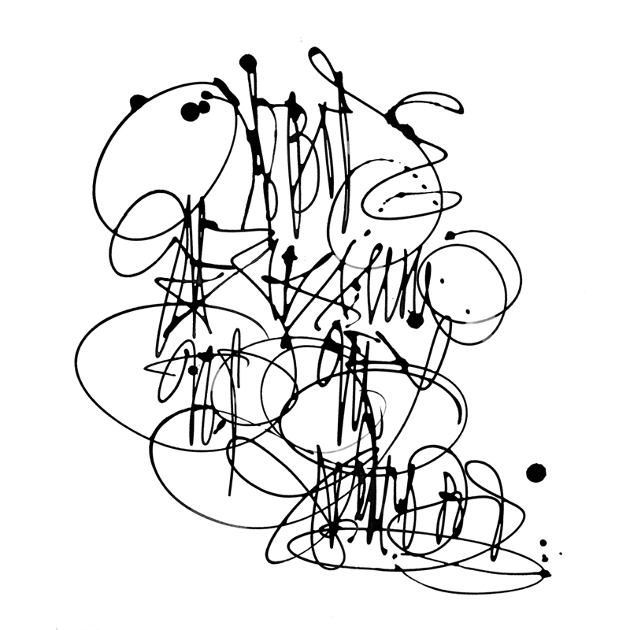
Это визуализация впечатления от вальса, исполненного Наталией Ковш под музыку Шопена — в пачке, на пуантах и с поддержками. Три элегантных кляксы (намёки на листики растений) — печать, удостоверяющая дату создания этюда — XXI век.
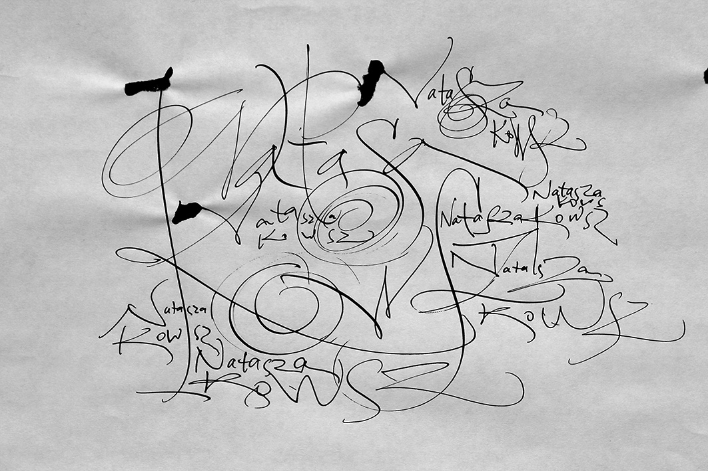
Здесь мы распрощаемся с классикой и вернёмся в наше время, так мало ценящее истинно прекрасное.
Л. Миронова,
03.04.2014